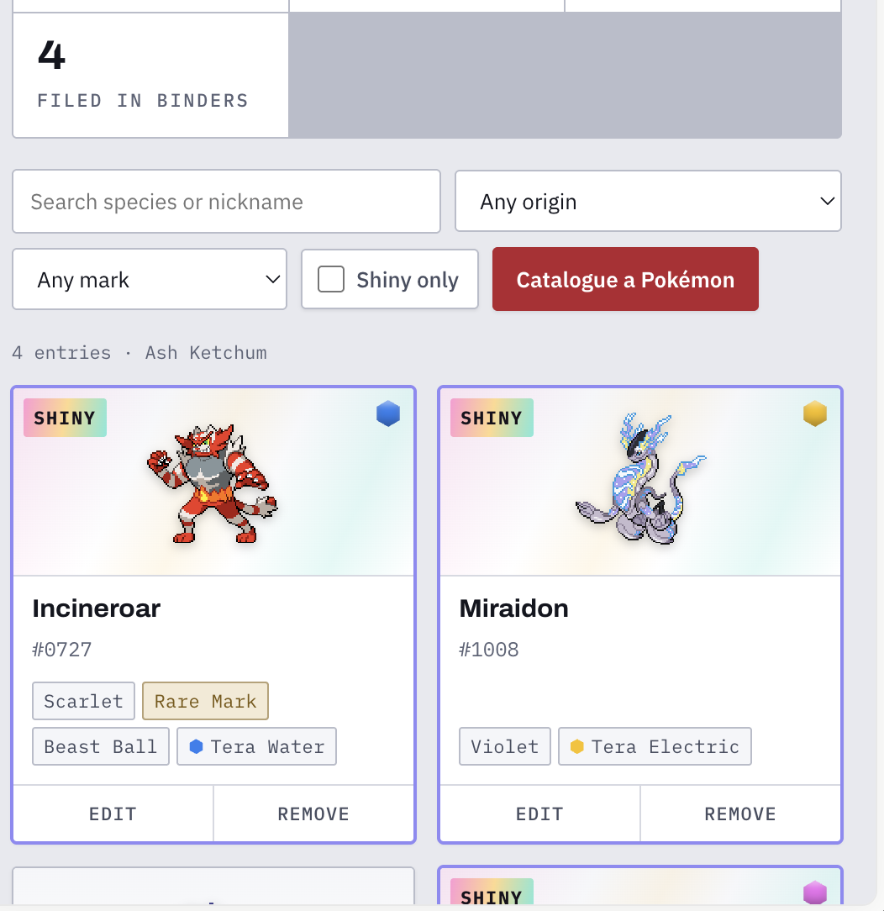
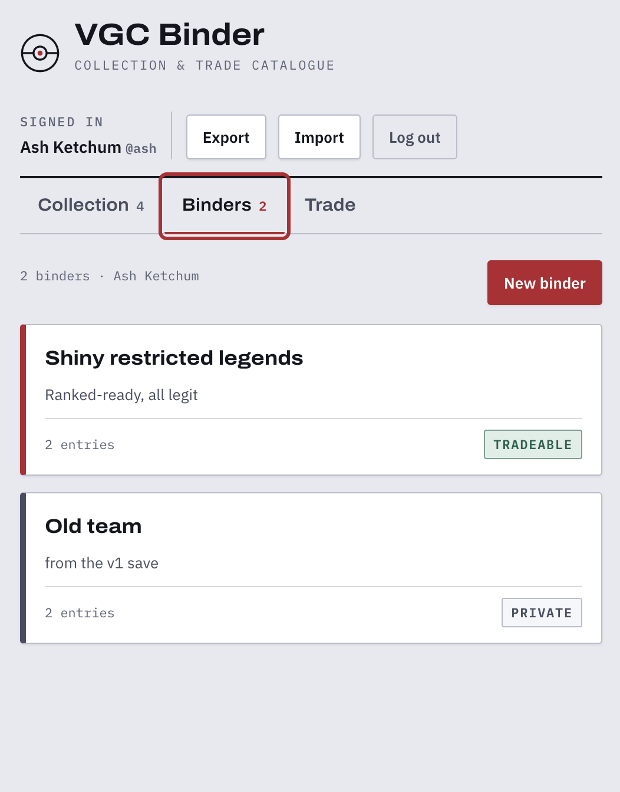
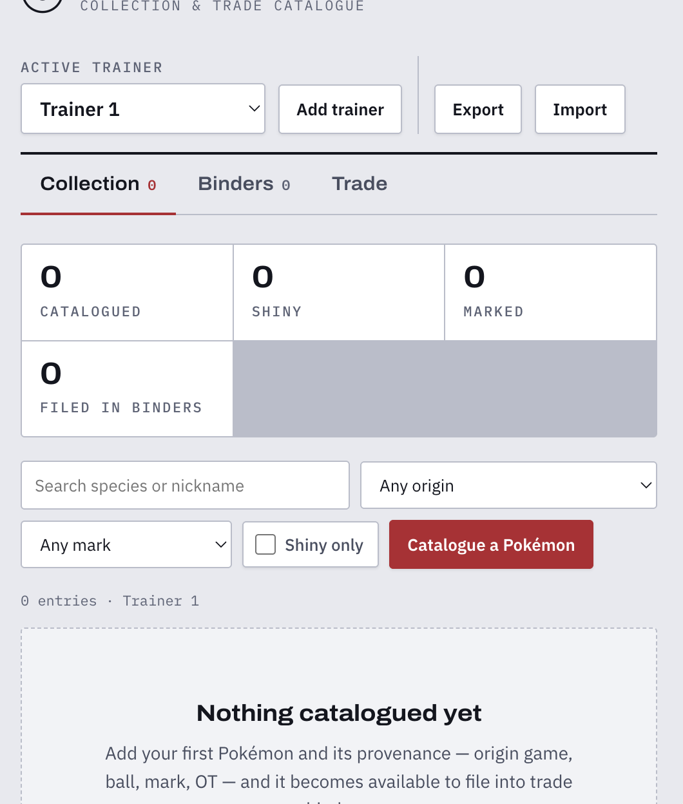

Full-stack · web application
Provenance tracking and trade negotiation for VGC collections
Competitive Pokémon players care about provenance — which game a Pokémon came from, its ball, its marks, its original trainer. VGC Binder records all of it, groups entries into binders, and lets players publish a binder as tradeable so others can browse it and open a negotiation.
- Python
- FastAPI
- SQLite
- JWT
- bcrypt
- pytest
- Vanilla JS
- CSS
- REST
- WCAG 2.1 AA
Frontend
No framework, no build step
- One HTML file — vanilla JS and CSS, nothing to compile, opens straight from disk.
- Accessibility measured, not assumed. A contrast auditor run over every rendered text node found real failures at
2.76:1against a 4.5:1 requirement, and type down to 9px. Both fixed. - Colour is never the only signal — Tera types were encoded by hue alone, which fails WCAG 1.4.1; they now read as text with colour as reinforcement.
- Keyboard and screen reader — roving-tabindex tab strip, focus-trapped dialogs that restore focus on close, live regions for filter results.
- Light and dark themes, plus reduced-motion, forced-colors, and increased-contrast support.
Backend
FastAPI with a tested auth boundary
- Two-token auth — 15-minute HS256 JWT access tokens plus revocable opaque refresh tokens, stored only as hashes.
- bcrypt with a SHA-256 prehash, so a passphrase longer than bcrypt's 72-byte limit isn't silently truncated.
- No account enumeration — an unknown username still costs a bcrypt comparison and returns an identical response.
- Relational schema with foreign-key cascades, so deleting a Pokémon can't leave a dangling reference inside a binder.
- 39 end-to-end tests, including the one that matters most: a third party requesting someone else's message thread gets nothing back.

The collectionShiny entries get a foil sleeve. Every card carries its provenance — origin, mark, ball, Tera type — as text, never colour alone. 
BindersThe tradeable stamp is the switch that decides whether other trainers can browse a binder and open a trade. 
The standalone buildFirst run, no account and no backend — the version the demo link opens.
{kind=link}
{kind=link}
{kind=link}
Decisions worth explaining
- Opaque refresh tokens over pure JWT. A stateless JWT can't be revoked without a blocklist, so logging out wouldn't really log you out. Pairing a short-lived access token with a revocable refresh token keeps logout meaningful; the documented cost is a window of at most 15 minutes.
- Built the standalone version first. Shipping something that worked with zero infrastructure proved the interface before any auth, database, or hosting existed. The API rewrite then had a known-good target to match instead of a moving one.
- Import migrates old formats. Adding a backend orphaned every existing save file, so import reads the original localStorage-era exports too — mapping field names, remapping record IDs into binders, and sanitising malformed values rather than rejecting the file.
- Verification over assertion. Contrast was measured across every text node in both themes; access control was tested from a third party's perspective; the export/import round trip was checked by wiping the database and restoring it. Where something couldn't be verified — no screen reader was available — that's stated rather than glossed over.
- 39Tests passing
- AAWCAG 2.1, measured
- 0Build steps
- 2Deploy modes